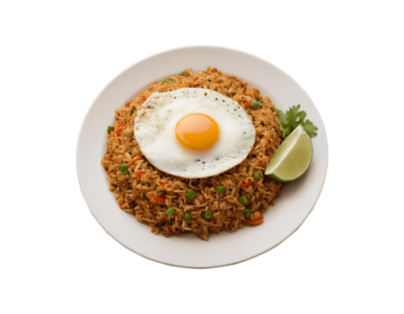
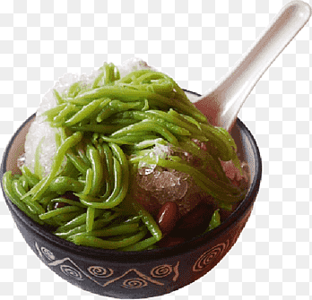

Nasi goreng, is a Southeast Asian rice dish typically prepared with pre-cooked rice stir-fried in a small amount of oil or margarine and seasoned with ingredients such as sweet soy sauce, shallots, garlic, ground shrimp paste, tamarind and chilli.

Cendol, also known as lot chong, mont let saung, nom lut, lod song and bánh lọt, is a traditional Southeast Asian dessert characterised by soft, green, worm-like jelly strands made from rice flour or mung bean starch, coconut milk and palm sugar syrup, typically served over shaved ice.